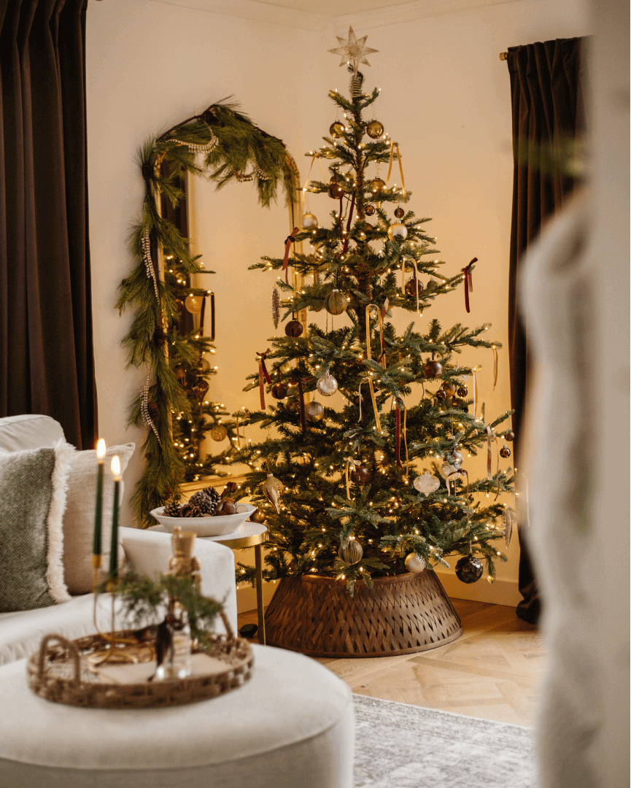

Classic and Realistic Tree Tips

Compare classic density with realistic needle variation to choose the profile that fits your decor and available space.

Compare classic density with realistic needle variation to choose the profile that fits your decor and available space.